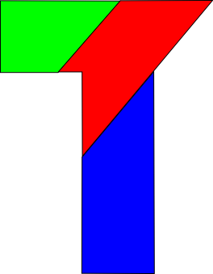
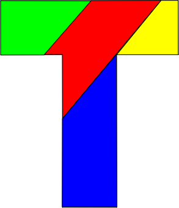

Rompecabezas T (solución)
Ayer dejé planteado un rompecabezas, ¿pudieron solucionarlo? Cuando empezamos a probar nos costó bastante, el juego fue la atención de la noche hasta que desistimos. Incluso empezamos a elaborar teorías sobre el Pensamiento Lateral, aventuramos que el resultado sería algo deforme, incluso que la T se formaría con espacios en blanco y las maderas al rededor.
Bien, no. La solución, una vez hallada, no parece muy complicada. Si no pudiste resolverlo y como nosotros te pusiste a elaborar teorías para proteger tu amor propio: lo siento, simplemente no pudiste resolverlo.
A continuación la solución:



Sobre el juego
El juego es producido por La Parra, taller de juegos. Santa Fe, 9 de julio 4843.
Comentarios
Comments powered by Disqus